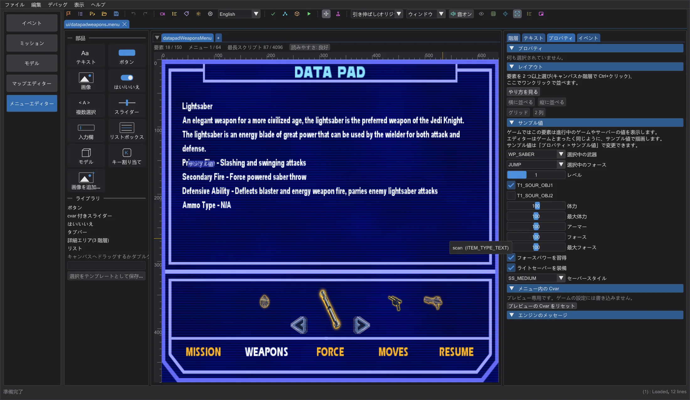
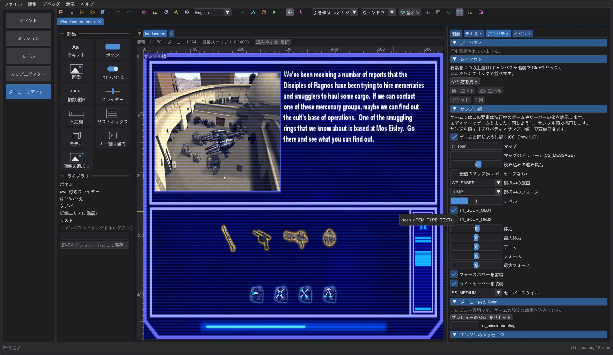
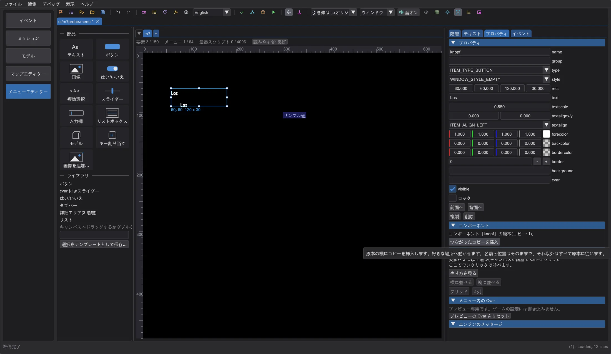
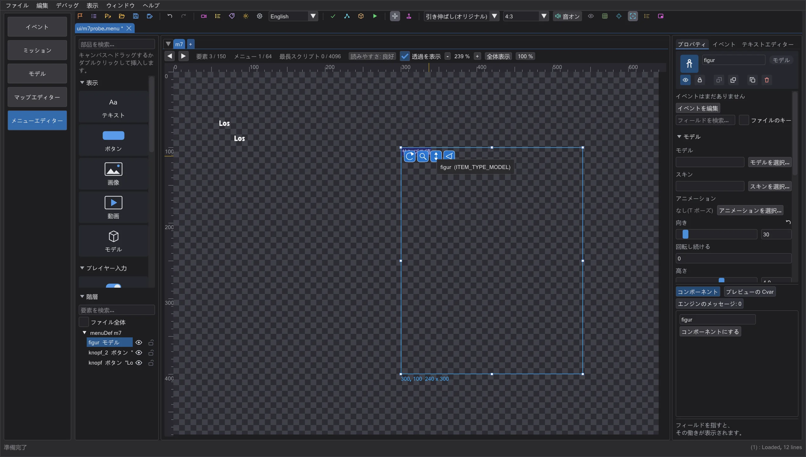

メニューエディター: ゲームの値、ゲーム内での再読み込み、コンポーネント
実行中のゲームの値を表示する要素は、変更できるサンプル値でゲームと同じように描かれます。キー割り当ては本物のキーを表示し、ロード画面と接続画面はゲームと同じ見た目になり、「ゲームでテスト」で起動したゲームは保存後にメニューを再読み込みし、コンポーネントはコピーをそろえ、モデルには回転・距離・視野角のハンドルが付きます。
ゲームの値を持つ要素#
一部の要素(ownerdraw)はゲームのコード自身が描きます: マルチプレイのプレイヤーメニューのフォースの星とポイント、サーバーのソースとフィルター、ボット名、グラフィックドライバーのページ(GL_VENDOR と拡張機能。エディターは実際の OpenGL ドライバーから読みます)、目標・武器・フォースのデータパッド、Movie Duels の Pazaak の盤とショップなど。エディターはそのすべてをエンジンとまったく同じように描きます。ゲームが値を実行中のゲームやサーバーから取る所ではサンプル値を使い、要素の左上に サンプル値 と表示します(編集中のみ)。サンプルは プロパティ > サンプル値 で変更できます: 選択中の武器とフォースとそのレベル、目標、体力、フォース、弾薬、マルチプレイではサーバー設定(g_jediVmerc、g_forceBasedTeams、最高フォースランク、サーバー更新)。ゲーム自身が空で描く要素(ボイスチャットの項目など)は空のままで、対戦中にだけ埋まるリスト(プレイヤー一覧)にはサンプル名が出ます。

Jedi Outcast と Movie Duels は独自のデータパッドを描きます: Jedi Outcast の HUD の体力・アーマー・フォース・弾薬のリング、武器・インベントリ・フォースの後ろの突起付きアイコン帯、そして Movie Duels では左右に 1 つずつの小さめのアイコン、25 種類のフォースと独自のテキスト。プレビューは読み込んだデータのゲームに合わせます。
キー割り当て: 操作メニューのキー割り当て要素は、??? ではなく、ゲームが最初から割り当てているキー(default.cfg や mpdefault.cfg などゲームの既定の設定から)をゲームのキー名で表示します。ゲームが扱わないコマンドはゲームと同じく ??? のままです。
ロード画面と接続画面#

シングルプレイの loadscreen メニューとマルチプレイの Connect メニューは、ゲームが表示するものの一部にすぎません。読み込み中、ゲームはその上にレベル画像、セーブデータの武器とフォースのアイコン、読み込みバー、マップ名を描き、接続中はマップ、サーバー、接続状態を書きます。エディターはこれをすべてゲームと同じように描きます。プロパティ > サンプル値 で、マップ、マップのメッセージ、読み込みの進み具合、特別な最初のマップ(引用付きの黒い画面)、マルチプレイではサーバー、マップ、接続状態、パケット、メッセージを選べます。スイッチ ゲームと同じように描く(CG_DrawHUD) を切るとメニューだけを表示します。
実行中のゲームで再読み込み#
実行中のゲームで読み直せる場合(OpenJK と Movie Duels)、ゲームでテスト はメニューをばらばらのファイルとして専用のテストフォルダー(ゲームフォルダーには決して入れません)に置きます。そのゲームが動いている間は、保存のたびにファイルを書き直し、ゲームに ui_load を渡します。ゲームはメニューを閉じ、メニューセットを読み直し、最後のメニューを開きます。再起動は要りません。エディターは自分で起動したゲームのウィンドウにだけキーを送ります。Jedi Academy と Jedi Outcast のオリジナルのプログラムも ui_load を知っていますが、背後のウィンドウに送られたキーを受け付けないため、これまでどおり .pk3 と再起動を使います。
コンポーネント#

要素を選び、プロパティで コンポーネントにする をクリックすると、その要素がコンポーネントの原本になります。つながったコピーを挿入 でその横につながったコピーを挿入します。コピーは好きな場所へ動かせます。名前と位置はコピーのもので、それ以外はすべて原本に従います。原本の文字、色、大きさを変えると、すべてのコピーも一緒に変わります(元に戻す 1 回分)。.menu ファイルでは原本もコピーも、前にコメント行(// jkstudio:komponente <name>、// jkstudio:instanz <name>)が付いた普通の itemDef のままで、ゲームはほかの要素と同じように読みます。
モデルの調整#

選択したモデル要素の左上には、サイズ変更ハンドルの横に 4 つの大きなボタンが付きます(要素が小さすぎるときはその上)。1 つ目を左右にドラッグするとモデルが回り(model_angle: 180 は見る人の方を向き、0 は背を向けます)、2 つ目を上下にドラッグすると遠ざかるか近づき、3 つ目で上げ下げし、4 つ目を左右にドラッグすると視野角(model_fovx、model_fovy)が変わります。新しいモデルは正面から全体が見え、値はゲーム自身のメニューのものです。重要: model_g2anim はファイル内で asset_model より前にあるときだけ再生されます(isCharacter はどこでも可)。そうでないとゲームは T ポーズになり、プレビューも同じです。
新しいプロジェクト はマルチプレイの形式で始められます: 新しいプロジェクト の前に シングルプレイ か マルチプレイ を選んでください。
ゲームで確認済み#
メニュー全体のテンプレートは Movie Duels、オリジナルの Jedi Academy、Jedi Outcast で撮影し、プレビューと比べました。スライダーは各ゲームの大きさです: Jedi Academy と Jedi Outcast のシングルでは幅 128、Movie Duels とマルチでは 96。Jedi Outcast は ^ の後の文字をすべて色として扱い(^B は緑)、色コードもテキストの幅に数えます。プレビューも同じなので、中央揃えや右揃えのテキストはゲームと同じ位置に来ます。